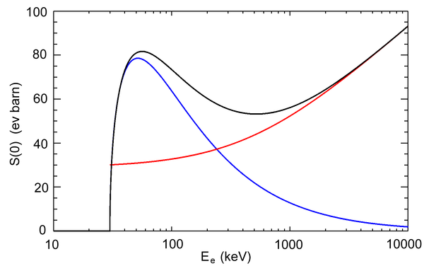

Spis treści
Promieniowanie elektromagnetyczne (EM)
Promieniowanie elektromagnetyczne to rozchodzące się w przestrzeni zaburzenie pola elektromagnetycznego. Składowa elektryczna i magnetyczna fali indukują się wzajemnie - zmieniające się pole elektryczne wytwarza zmieniające się pole magnetyczne, a z kolei
zmieniające się pole magnetyczne wytwarza zmienne pole elektryczne. Właściwości fal elektromagnetycznych zależą od długości fali. Promieniowaniem elektromagnetycznym o różnej długości fali są fale radiowe, mikrofale, podczerwień, światło
widzialne, ultrafiolet, promieniowanie rentgenowskie i promieniowanie gamma. W opisie kwantowym promieniowanie elektromagnetyczne jest traktowane jako strumień nieposiadających masy cząstek elementarnych zwanych fotonami. Energia każdego
fotonu zależy od długości fali.
Podział fal EM
Promieniowanie cieplne (termiczne) - promieniowanie elektromagnetyczne emitowane przez cząstki naładowane elektrycznie w wyniku ich ruchu termicznego w materii. Promieniowanie cieplne emitowane jest przez
każdą materię o temperaturze wyższej od zera bezwzględnego.
Przedstawienie promieniowania cieplnego
Mikrofalowe promieniowanie tła (promieniowanie reliktowe) - rodzaj promieniowania elektromagnetycznego o rozkładzie termicznym energii, czyli widmie ciała doskonale czarnego o temperaturze 2,7249–2,7252 K.
Maksimum gęstości energii przypada na fale o długości 1,1 mm. Promieniowanie to jest pozostałością po wczesnych etapach ewolucji Wszechświata i okresie rekombinacji elektronów i protonów. Promieniowanie reliktowe niemal nie oddziałuje
z cząstkami materii, a wypełnia prawie jednorodnie Wszechświat.
Postęp w badaniach nad promieniowaniem reliktowym
Promieniowanie laserowe - promieniowanie elektromagnetyczne z zakresu światła widzialnego, ultrafioletu lub podczerwieni, wykorzystujące zjawisko emisji wymuszonej wytwarzane przez laser.Nazwa jest akronimem
od (ang.) Light Amplification by Stimulated Emission of Radiation: wzmocnienie światła poprzez wymuszoną emisję promieniowania. Promieniowanie lasera jest spójne, zazwyczaj spolaryzowane i ma postać wiązki o bardzo małej rozbieżności.
W laserze łatwo jest otrzymać promieniowanie o bardzo małej szerokości linii emisyjnej, co jest równoważne bardzo dużej mocy w wybranym, wąskim obszarze widma. W laserach impulsowych można uzyskać bardzo dużą moc w impulsie i bardzo
krótki czas trwania impulsu (zob. laser femtosekundowy).
Rozszczepienie wiązki lasera
Promieniowanie hamowania - promieniowanie elektromagnetyczne powstające podczas hamowania cząstki obdarzonej ładunkiem elektrycznym. Promieniowanie to jest jedną z dróg utraty energii przez poruszającą się
naładowaną cząstkę. Jest to, na poziomie mechaniki (elektrodynamiki) kwantowej, wyjaśnienie zjawiska radiacji np. anten. Jeżeli elektrony mają dostatecznie dużą energię, mogą emitować również promieniowanie rentgenowskie. Jest to najprostszy
sposób wytwarzania promieniowania rentgenowskiego.

Przekrój czynny na emisję fotonów o energii 30 keV w funkcji energii elektronów (czarna linia). Linia czerwona – przybliżenie ultrarelatywistyczne, linia niebieska – przybliżenie klasyczne.
Strumienie innych cząstek
Pierwotnie nazywano je promieniowaniem korpuskularnym, jednak w latach 20. XX wieku udowodniono, że także fale EM mają naturę korpuskularną; przykłady
nieelektromagnetycznych strumieni cząstek to część promieniowania jądrowego oraz kosmicznego.
Promieniowanie grawitacyjne
Promieniowanie grawitacjne, inaczej fala grawitacyjna to rzemieszczające się z prędkością światła w próżni odkształcenie w czasoprzestrzeni. W mechanice nierelatywistycznej fala ta objawia się jako rozchodzące się drgania pola grawitacyjnego. Źródłem
fal grawitacyjnych jest ciało poruszające się z przyspieszeniem. Do uzyskania obserwowalnych efektów ciało musi mieć bardzo duże przyspieszenie i ogromną masę. Obiekt emitujący fale traci energię, która unoszona jest w postaci promieniowania.
Kwantem promieniowania grawitacyjnego może być grawiton, hipotetyczna cząstka. Fale grawitacyjne zaobserwowano po raz pierwszy 14 września 2015 roku.
 Fale grawitacyjne wytwarzane przez układ dwóch bardzo szybko orbitujących wokół siebie obiektów (gwiazd neutronowych, białych karłów, czarnych dziur)
Fale grawitacyjne wytwarzane przez układ dwóch bardzo szybko orbitujących wokół siebie obiektów (gwiazd neutronowych, białych karłów, czarnych dziur)
Fale grawitacyjne wytwarzane przez układ dwóch bardzo szybko orbitujących wokół siebie obiektów (gwiazd neutronowych, białych karłów, czarnych dziur)